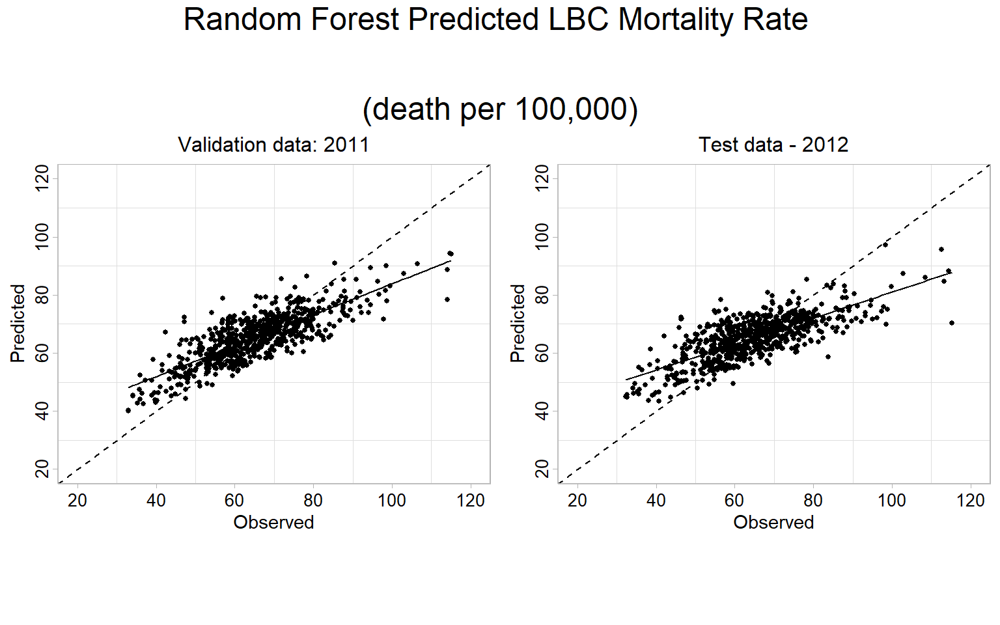
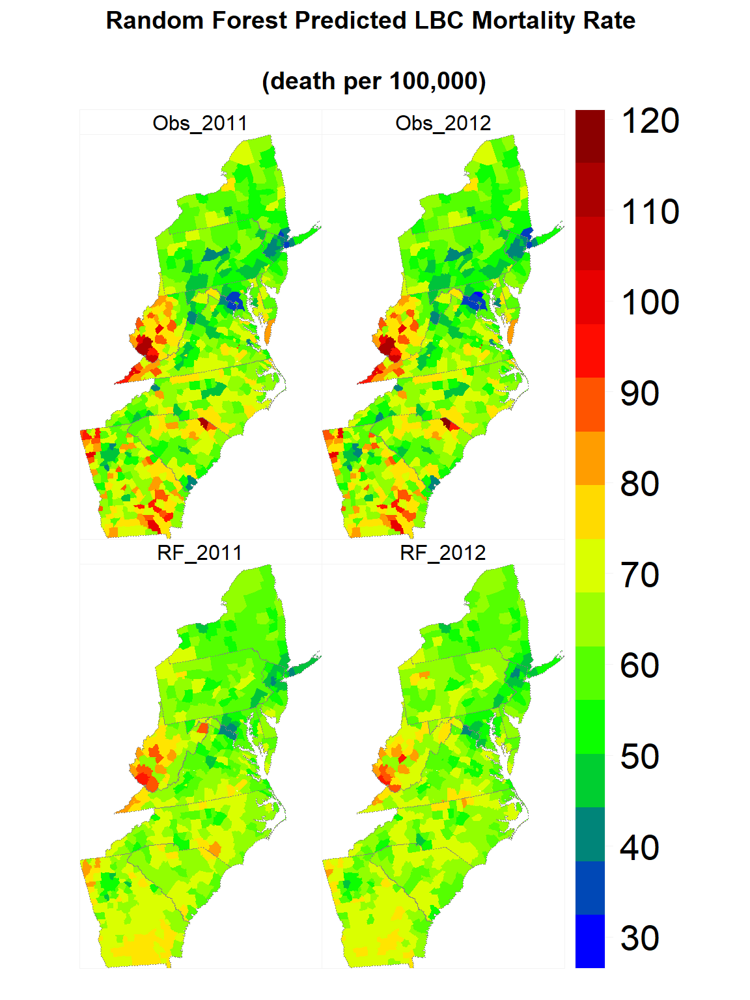
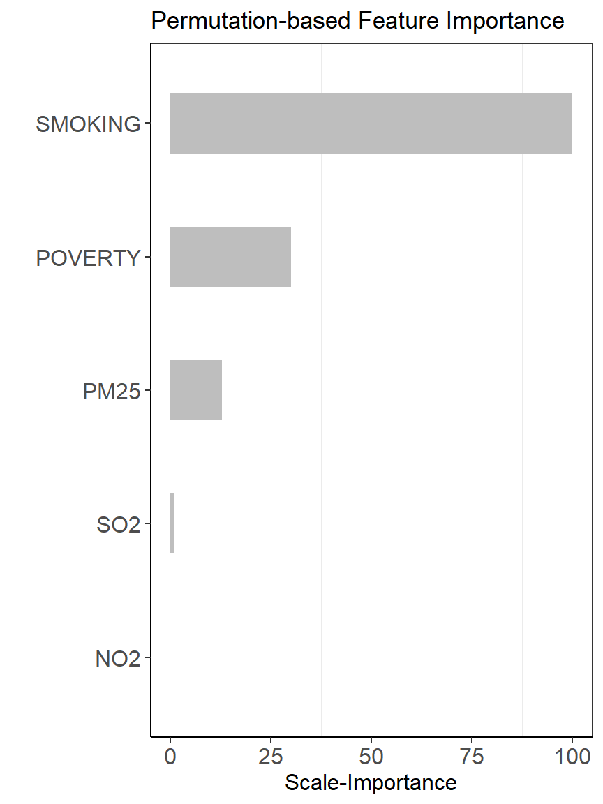
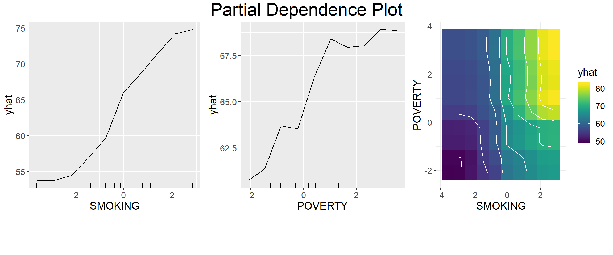
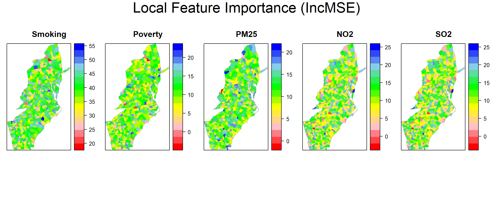
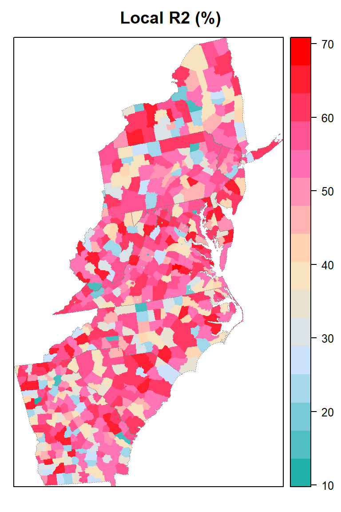
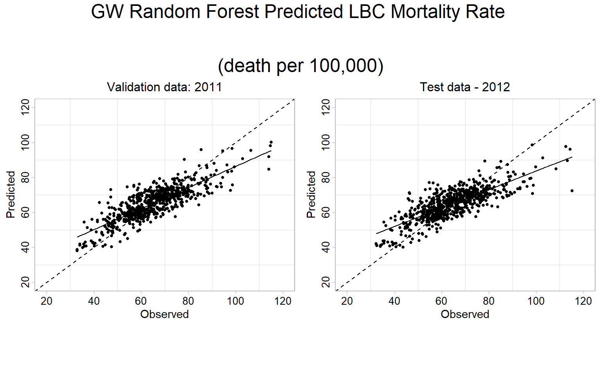

Global and Local Random Forest Regression
In this exercise, you will learn how to fit global and local (Geographically weighted) random forest regression models to predict county-level LBC mortality rate from poverty, smoking, the annual mean of PM25, NO2, and SO2 data. The data for the year 2010 will be used to train the models and the data for the year 2011 were used as a validation data set for optimizing the model parameters during the tuning and training processes. The data set for the year 2012 will be used as the hold-out test data to evaluate the performance of both global and local RF models. Also, you will learn some of the necessary interpretations of machine learning output.
This data could be found here
Load R packages
library(GWmodel) ## GW models
library(plyr) ## Data management
library(sp) ## Spatial Data management
library(spdep) ## Spatial autocorrelation
library(RColorBrewer) ## Visualization
library(classInt) ## Class intervals
library(raster) ## spatial data
library(grid) ## plot
library(gridExtra) ## Multiple plot
library(ggplot2) # plotting
library(tidyverse) # data
library(SpatialML) # Geographically weigted regressionLoad Data
# Define data folder
dataFolder<-"D:\\Dropbox\\Spatial Data Analysis and Processing in R\\Data_GWR\\"
county<-shapefile(paste0(dataFolder,"COUNTY_ATLANTIC.shp"))
state.bd<-shapefile(paste0(dataFolder,"STATE_ATLANTIC.shp"))
df<-read.csv(paste0(dataFolder,"data_all_1998_2012.csv"), header=T)
state <- list("sp.lines", as(state.bd, "SpatialLines"), col="grey50", lwd=.7,lty=3) Create training (2010), validation (2011) and test (2012) data
test.df<-df %>%
dplyr::select(FIPS, X, Y, Year, POVERTY, SMOKING, PM25, NO2, SO2, Rate) %>%
filter(Year == 2012)
valid.df<-df %>%
dplyr::select(FIPS, X, Y, Year, POVERTY, SMOKING, PM25, NO2, SO2, Rate) %>%
filter(Year == 2011)
train.df<-df %>%
dplyr::select(FIPS, X, Y, Year, POVERTY, SMOKING, PM25, NO2, SO2, Rate) %>%
filter(Year == 2010)Scale covariates
test.df[, 5:9] = scale(test.df[, 5:9])
valid.df[, 5:9] = scale(valid.df[, 5:9])
train.df[, 5:9] = scale(train.df[, 5:9])Global Random Forest
We use Distributed Random Forest (DRF) in h20 package to fit global RF model. DRF generates a forest of classification or regression trees, rather than a single classification or regression tree. Each of these trees is a weak learner built on a subset of rows and columns. More trees will reduce the variance. Both classification and regression take the average prediction over all of their trees to make a final prediction,
Grid Search for hyperprameters
Before fit DRF model, we will use a Random Grid Search (RGS) to find the optimal parameters for RF model. We will employ the 10-fold cross validation method to determine the optimal hyper-parameters from a set of all possible hyper-parameter value combinations. During the parameter tuning process, we wiil usw 0.001 and 2 for “stopping tolerance” and “stopping rounds”, respectively, as early stopping parameters. The best DRF will be used to predict LBC mortality rate for the year 2012.
Connect to H20
library(h2o)
h2o.init(nthreads = -1,max_mem_size ="48g",enable_assertions = FALSE)Create h20 dataframes
test.mf<-test.df[, 5:10]
valid.mf<-valid.df[, 5:10]
train.mf<-train.df[, 5:10]
test.hex<- as.h2o(test.mf)
valid.hex<- as.h2o(valid.mf)
train.hex<- as.h2o(train.mf)Define response and predictors
response <- "Rate"
predictors <- setdiff(names(train.hex), response)# Hyper-parameter
drf_hyper_params <-list(
ntrees = seq(10, 5000, by = 10),
max_depth=c(10,20,30,40,50),
sample_rate=c(0.7, 0.8, 0.9, 1.0)
)
# serach criteria
drf_search_criteria <- list(strategy = "RandomDiscrete",
max_models = 200,
max_runtime_secs = 900,
stopping_tolerance = 0.001,
stopping_rounds = 2,
seed = 1345767)
# Grid Search
drf_grid <- h2o.grid(
algorithm="randomForest",
grid_id = "drf_grid_IDx",
x= predictors,
y = response,
training_frame = train.hex,
validation_frame = valid.hex,
stopping_metric = "RMSE",
nfolds=10,
keep_cross_validation_predictions = TRUE,
hyper_params = drf_hyper_params,
search_criteria = drf_search_criteria,
seed = 42)DRF Grid parameters
# RF Grid parameters
drf_get_grid <- h2o.getGrid("drf_grid_IDx",sort_by="RMSE",decreasing=FALSE)
drf_get_grid@summary_table[1,]The Best DRF Model
best_drf <- h2o.getModel(drf_get_grid@model_ids[[1]])
#capture.output(print(summary(best_drf)),file = "DRF_summary_N_RY.txt")
best_drfDRF Cross-validation
cv.drf<-best_drf@model$cross_validation_metrics_summary%>%.[,c(1,2)]
cv.drfPrediction
# Creat a data-frame
FIPS.xy<-test.df[,1:3]
FIPS.xy$Obs_2011<-valid.df[,10]
FIPS.xy$Obs_2012<-test.df[,10]
# validation data
pred.valid<-as.data.frame(h2o.predict(object = best_drf, newdata = valid.hex))##
|
| | 0%
|
|=================================================================| 100%FIPS.xy$RF_2011<-pred.valid$predict
# test data
pred.test<-as.data.frame(h2o.predict(object = best_drf, newdata = test.hex))##
|
| | 0%
|
|=================================================================| 100%FIPS.xy$RF_2012<-pred.test$predictcat('RF Validation RMSE:', round(sqrt(mean((FIPS.xy$RF_2011-FIPS.xy$Obs_2011)^2 , na.rm = TRUE)), digits=3), '\n')## RF Validation RMSE: 7.818cat('RF Validation MAE:', round(mean(abs(FIPS.xy$RF_2011-FIPS.xy$Obs_2011) , na.rm = TRUE ), digits=3), '\n')## RF Validation MAE: 6.027cat('RF Validation R2:', round(summary(lm(Obs_2011~RF_2011,FIPS.xy))$r.squared, digits=3), '\n')## RF Validation R2: 0.647cat('RF Test RMSE:', round(sqrt(mean((FIPS.xy$RF_2012-FIPS.xy$Obs_2012)^2 , na.rm = TRUE)), digits=3), '\n')## RF Test RMSE: 8.887cat('RF Test MAE:', round(mean(abs(FIPS.xy$RF_2012-FIPS.xy$Obs_2012) , na.rm = TRUE ), digits=3), '\n')## RF Test MAE: 6.772cat('RF Test R2:', round(summary(lm(Obs_2012~RF_2012,FIPS.xy))$r.squared, digits=3), '\n')## RF Test R2: 0.556RF Predicted 1:1 Plot
Validation data (year 2011)
p.valid<-ggplot(data=FIPS.xy, aes(x=Obs_2011, y=RF_2011))+
geom_point(size = 1.0)+
geom_smooth(method = "lm", se = FALSE, colour="black",size=0.5)+
scale_x_continuous(limits=c(20,120), breaks=seq(20, 120, 20))+
scale_y_continuous(limits=c(20,120), breaks=seq(20, 120, 20)) +
theme_light() +
ggtitle("Validation data: 2011")+
theme(
plot.title = element_text(color="black", size=12,hjust = 0.5),
panel.background = element_rect(fill = "white",colour = "gray75",size = 0.5, linetype = "solid"),
axis.line = element_line(colour = "grey"),
panel.grid.major = element_blank(),
axis.text.x=element_text(size=10, colour="black"),
axis.text.y=element_text(size=10,angle = 90,vjust = 0.5, hjust=0.5, colour='black'))+
geom_abline(slope=1, intercept=0,linetype="dashed",size=0.5)+
labs(x="Observed", y = "Predicted") Test data (year 2012)
p.test<-ggplot(data=FIPS.xy, aes(x=Obs_2012, y=RF_2012))+
geom_point(size = 1.0)+
geom_smooth(method = "lm", se = FALSE, colour="black",size=0.5)+
scale_x_continuous(limits=c(20,120), breaks=seq(20, 120, 20))+
scale_y_continuous(limits=c(20,120), breaks=seq(20, 120, 20)) +
theme_light() +
ggtitle("Test data - 2012")+
theme(
plot.title = element_text(color="black", size=12,hjust = 0.5),
panel.background = element_rect(fill = "white",colour = "gray75",size = 0.5, linetype = "solid"),
axis.line = element_line(colour = "grey"),
panel.grid.major = element_blank(),
axis.text.x=element_text(size=10, colour="black"),
axis.text.y=element_text(size=10,angle = 90,vjust = 0.5, hjust=0.5, colour='black'))+
geom_abline(slope=1, intercept=0,linetype="dashed",size=0.5)+
labs(x="Observed", y = "Predicted") Plot all
grid.arrange(p.valid,p.test,
ncol= 2,
heights = c(30,6),
top = textGrob("Random Forest Predicted LBC Mortality Rate
\n(death per 100,000)",gp=gpar(fontsize=18)))
Map predicted values
rf.SPDF<-merge(county, FIPS.xy, by="FIPS")
names(rf.SPDF)## [1] "FIPS" "ID" "x" "y" "REGION_ID"
## [6] "DIVISION_I" "STATE_ID" "COUNTY_ID" "REGION" "DIVISION"
## [11] "STATE" "COUNTY" "X" "Y" "Obs_2011"
## [16] "Obs_2012" "RF_2011" "RF_2012"myPalette <- colorRampPalette(c("blue","green", "yellow", "red", "red4"))
spplot(rf.SPDF,
c("RF_2011", "RF_2012", "Obs_2011", "Obs_2012" ),
layout=c(2, 2),
par.strip.text=list(cex=1, lines=1, col="black"),
main = list( "Random Forest Predicted LBC Mortality Rate
\n(death per 100,000)", adj = 0.5),
sp.layout=list(state),
par.settings=list(strip.background=list(col="transparent"),
strip.border = list(col = 'grey95',lwd=0.5),
axis.line=list(col="grey95",lwd=0.5)),
col="transparent",
colorkey=list(space="right",height=1, width=2,labels=list(cex=1.75)),
col.regions=myPalette(100))
Interpretable Machine Learning
# load Model interpretability packages
library(pdp) # for partial dependence plots (and ICE curves)
library(vip) # for variable importance plotsThe following code extracts these items for the h2o example:
# 1) create a data frame with just the features
features <- as.data.frame(train.hex) %>% dplyr::select(-Rate)
# 2) Create a vector with the actual responses
response <- as.data.frame(train.hex) %>% pull(Rate)
# 3) Create custom predict function that returns the predicted values as a vector
pred <- function(object, newdata) {
results <- as.vector(h2o.predict(object, as.h2o(newdata)))
return(results)
}Permutation-based feature importance
Permutation Feature Importance (PFI) approach (Fisher et al., 2018) was will be applied to rank the predictors of the RF ML model. The PFI approach measures the importance of a feature by calculating the increase in the model’s prediction error after permuting the feature. We will used “vip” package (Greenwell and Boehmke, 2019) for calculating variable importance scores with 10 Monte Carlo simulations. RMSE was used in computing model performance and all measures of importance were scaled to have a maximum value of 100.
per.var.imp<-vip(
best_drf,
train = as.data.frame(train.hex),
method = "permute",
target = "Rate",
metric = "RMSE",
nsim = 5,
sample_frac = 0.5,
pred_wrapper = pred
)per.var.imp<-per.var.imp$data
# Scale the importance
per.var.imp$Rank<-(per.var.imp$Importance-min(per.var.imp$Importance))*100/(max(per.var.imp$Importance)-min(per.var.imp$Importance))
head(per.var.imp)## # A tibble: 5 x 4
## Variable Importance StDev Rank
## <chr> <dbl> <dbl> <dbl>
## 1 SMOKING 7.47 0.593 100
## 2 POVERTY 4.73 0.347 31.0
## 3 PM25 4.11 0.324 15.2
## 4 SO2 3.58 0.362 1.91
## 5 NO2 3.50 0.317 0ggplot(per.var.imp, aes(y=Rank, x=reorder(Variable, +Rank))) +
ylab('Scale-Importance') +
xlab('')+
geom_bar(stat="identity", width = 0.45,fill = "grey")+
theme_bw() +
theme(axis.line = element_line(colour = "black"),
panel.grid.major = element_blank(),
axis.text.y=element_text(size=12),
axis.text.x = element_text(size=12),
axis.title.x = element_text(size=12),
axis.title.y = element_text(size=12))+
coord_flip()+
ggtitle("Permutation-based Feature Importance")
Partial dependence plot (PDP)
To understand and visualize how the model predictions are influenced by each predictor when all other predictors are being controlled, we used the “pdp” package (Greenwell, 2017) to generate partial dependence plots (PDPs) of the first two important predictors for the best ML model. Partial dependence plots, introduced by Friedman (2001) (Friedman, 2001), is used to interpret the output of complex machine learning models. In PDPs, the Y-axis value (ŷ) is defined by the average of all of the possible model predictions when the value of the objective predictor is at X.
# Custom prediction function wrapper
pdp_pred <- function(object, newdata) {
results <- mean(as.vector(h2o.predict(object, as.h2o(newdata))))
return(results)
}var.names=per.var.imp[1]
var_1st=var.names[1,]$Variable
var_1st## [1] "SMOKING"var_2nd=var.names[2,]$Variable
var_2nd## [1] "POVERTY"The 1st most Important Variables
pd_var_1st<- partial(
best_drf,
train = as.data.frame(train.hex),
pred.var = var_1st,
pred.fun = pdp_pred,
parallel = TRUE,
grid.resolution = 10
)
pd_1<-autoplot(pd_var_1st,
rug = TRUE,
train=as.data.frame(train.hex)) +
theme(text = element_text(size=15))The 2nd most Important Variables
pd_var_2nd<- partial(
best_drf,
train = as.data.frame(train.hex),
pred.var = var_2nd,
pred.fun = pdp_pred,
parallel = TRUE,
grid.resolution = 10
)
pd_2<-autoplot(pd_var_2nd,
rug = TRUE,
train=as.data.frame(train.hex)) +
theme(text = element_text(size=15))Smoking vs Poverty
pd_var_1st_2nd<- partial(
best_drf,
train = as.data.frame(train.hex),
pred.var = c(var_1st,var_2nd),
pred.fun = pdp_pred,
parallel = TRUE,
grid.resolution = 10
)
pd_1_2<-autoplot(pd_var_1st_2nd,
contour = TRUE) +
theme(text = element_text(size=15))grid.arrange(pd_1,pd_2,pd_1_2,
ncol= 3,
heights = c(40,8),
top = textGrob("Partial Dependence Plot", gp=gpar(fontsize=25)))
Local Random Forest
“Geographical Weighted Random Forest (GWRF) or local RF model is a spatial analysis method using a local version of the Random Forest Regresson Model. It allows for the investigation of the existence of spatial non-stationarity, in the relationship between a dependent and a set of independent variables. The latter is possible by fitting a sub-model for each observation in space, taking into account the neighbouring observations. This technique adopts the idea of the Geographically Weighted Regression, Kalogirou (2003). The main difference between a tradition (linear) GWR and GRF is that we can model non-stationarity coupled with a flexible non-linear model which is very hard to overfit due to its bootstrapping nature, thus relaxing the assumptions of traditional Gaussian statistics. Essential it was designed to be a bridge between machine learning and geographical models, combining inferential and explanatory power. Additionally, it is suited for datasets with numerous predictors, due to the robust nature of the random forest algorithm in high dimensionality.”
Geographical Weighted Random Forest (GRF) is based on the concept of spatially varying coefficient models (Fotheringham et al. 2003) where a global process becomes a decomposition of several local sub-models and can be used as a predictive and/or explanatory tool (Geogoans et al, 2018)
To implement the GRF we use a recently developed R package SpatialML (Kalogirou and Georganos 2018; “SpatialML.” R Foundation for Statistical Computing)
Coords<-train.df[ ,2:3]
grf.model <- grf(Rate ~ POVERTY+SMOKING+PM25+NO2+SO2,
dframe=train.df,
bw=162, # a positive number, in the case of an "adaptive kernel" or a real in the case of a "fixed kernel".
ntree= 500,
mtry = 2, # n integer referring to the number of trees to grow for each of the local random forests.
kernel="adaptive", # yhe kernel to be used in the regression. Options are "adaptive" or "fixed".
forests = TRUE, # a option to save and export (TRUE) or not (FALSE) all the local forests
coords=Coords) # a numeric matrix or data frame of two columns giving the X,Y coordinates of the observationsGlobal Variable Importnace
grf.model$Global.Model$importance ## %IncMSE IncNodePurity
## POVERTY 26.70089 20073.13
## SMOKING 112.45254 43345.33
## PM25 17.58009 11367.77
## NO2 14.81682 13391.54
## SO2 9.01535 11043.26Global Mean MSE
mean(grf.model$Global.Model$mse)## [1] 71.87179Global Mean R2
mean(grf.model$Global.Model$rsq)## [1] 0.5412476Local Model Summary and goodness of fit statistics (training and OOB)
grf.model$LocalModelSummary## $l.IncMSE
## Min Max Mean StD
## POVERTY -3.1553168 22.00167 10.138802 4.326018
## SMOKING 19.9068219 53.42578 38.880572 6.394213
## PM25 -0.5808945 20.48760 11.761499 3.644535
## NO2 -2.0807832 24.13955 11.278732 5.280920
## SO2 -0.6054641 21.40432 9.828823 4.164296
##
## $l.IncNodePurity
## Min Max Mean StD
## POVERTY 1533.849 8235.350 3489.277 1290.3320
## SMOKING 4800.108 17856.038 8237.988 2754.8883
## PM25 1402.282 4342.134 2553.320 577.7603
## NO2 1262.982 3898.109 2586.017 688.2369
## SO2 1282.516 6775.013 2840.593 1188.0265
##
## $l.RSS.OOB
## [1] 46218.12
##
## $l.r.OOB
## [1] 0.5570466
##
## $l.RSS.Pred
## [1] 9478.563
##
## $l.r.Pred
## [1] 0.9091577Local feature importance (IncMSE)
gwrf.SPDF<-shapefile(paste0(dataFolder,"COUNTY_ATLANTIC.shp"))
gwrf.SPDF@data$incMSE.SMOK=grf.model$Local.Pc.IncMSE$SMOK
gwrf.SPDF@data$incMSE.POV=grf.model$Local.Pc.IncMSE$POV
gwrf.SPDF@data$incMSE.PM25=grf.model$Local.Pc.IncMSE$PM25
gwrf.SPDF@data$incMSE.NO2=grf.model$Local.Pc.IncMSE$NO2
gwrf.SPDF@data$incMSE.SO2=grf.model$Local.Pc.IncMSE$SO2Plot local feature importance (IncMSE)
col.palette.t<-colorRampPalette(c("blue", "sky blue", "green","yellow","pink", "red"),space="rgb",interpolate = "linear")
smok<-spplot(gwrf.SPDF,"incMSE.SMOK", main = "Smoking",
sp.layout=list(state),
col="transparent",
col.regions=rev(col.palette.t(100)))
pov<-spplot(gwrf.SPDF,"incMSE.POV", main = "Poverty",
sp.layout=list(state),
col="transparent",
col.regions=rev(col.palette.t(100)))
pm25<-spplot(gwrf.SPDF,"incMSE.PM25", main = "PM25",
sp.layout=list(state),
col="transparent",
col.regions=rev(col.palette.t(100)))
no2<-spplot(gwrf.SPDF,"incMSE.NO2", main = "NO2",
sp.layout=list(state),
col="transparent",
col.regions=rev(col.palette.t(100)))
so2<-spplot(gwrf.SPDF,"incMSE.NO2", main = "SO2",
sp.layout=list(state),
col="transparent",
col.regions=rev(col.palette.t(100)))grid.arrange(smok, pov, pm25, no2, so2,
ncol=5,
heights = c(30,6),
top = textGrob("Local Feature Importance (IncMSE)",gp=gpar(fontsize=25)))
Local goodness of fit
county@data$loc_R2=grf.model$LGofFit$LM_Rsq100myPaletteRes <- colorRampPalette(c("lightseagreen","lightsteelblue1", "moccasin","hotpink", "red"))
spplot(county,"loc_R2", main = "Local R2 (%)",
sp.layout=list(state),
col="transparent",
col.regions=myPaletteRes(100))
Prediction
# Validation data
FIPS.xy$GWRF_2011<-predict.grf(grf.model, valid.df, x.var.name="X", y.var.name="Y", local.w=1, global.w=0)
# Test data
FIPS.xy$GWRF_2012<-predict.grf(grf.model, test.df, x.var.name="X", y.var.name="Y", local.w=1, global.w=0)cat('GWRF Validation RMSE:', round(sqrt(mean((FIPS.xy$GWRF_2011-FIPS.xy$Obs_2011)^2 , na.rm = TRUE)), digits=3), '\n')## GWRF Validation RMSE: 7.307cat('GWRF Validation MAE:', round(mean(abs(FIPS.xy$GWRF_2011-FIPS.xy$Obs_2011) , na.rm = TRUE ), digits=3), '\n')## GWRF Validation MAE: 5.594cat('GWRF Validation R2:', round(summary(lm(Obs_2011~GWRF_2011,FIPS.xy))$r.squared, digits=3), '\n')## GWRF Validation R2: 0.683cat('GWRF Test RMSE:', round(sqrt(mean((FIPS.xy$GWRF_2012-FIPS.xy$Obs_2012)^2 , na.rm = TRUE)), digits=3), '\n')## GWRF Test RMSE: 8.142cat('GWRF Test MAE:', round(mean(abs(FIPS.xy$GWRF_2012-FIPS.xy$Obs_2012) , na.rm = TRUE ), digits=3), '\n')## GWRF Test MAE: 6.214cat('GWRF Test R2:', round(summary(lm(Obs_2012~GWRF_2012,FIPS.xy))$r.squared, digits=3), '\n')## GWRF Test R2: 0.622GWRF Predicted 1:1 Plot
Validation data (year 2011)
p1.valid<-ggplot(data=FIPS.xy, aes(x=Obs_2011, y=GWRF_2011))+
geom_point(size = 1.0)+
geom_smooth(method = "lm", se = FALSE, colour="black",size=0.5)+
scale_x_continuous(limits=c(20,120), breaks=seq(20, 120, 20))+
scale_y_continuous(limits=c(20,120), breaks=seq(20, 120, 20)) +
theme_light() +
ggtitle("Validation data: 2011")+
theme(
plot.title = element_text(color="black", size=12,hjust = 0.5),
panel.background = element_rect(fill = "white",colour = "gray75",size = 0.5, linetype = "solid"),
axis.line = element_line(colour = "grey"),
panel.grid.major = element_blank(),
axis.text.x=element_text(size=10, colour="black"),
axis.text.y=element_text(size=10,angle = 90,vjust = 0.5, hjust=0.5, colour='black'))+
geom_abline(slope=1, intercept=0,linetype="dashed",size=0.5)+
labs(x="Observed", y = "Predicted") Test data (year 2012)
p1.test<-ggplot(data=FIPS.xy, aes(x=Obs_2012, y=GWRF_2012))+
geom_point(size = 1.0)+
geom_smooth(method = "lm", se = FALSE, colour="black",size=0.5)+
scale_x_continuous(limits=c(20,120), breaks=seq(20, 120, 20))+
scale_y_continuous(limits=c(20,120), breaks=seq(20, 120, 20)) +
theme_light() +
ggtitle("Test data - 2012")+
theme(
plot.title = element_text(color="black", size=12,hjust = 0.5),
panel.background = element_rect(fill = "white",colour = "gray75",size = 0.5, linetype = "solid"),
axis.line = element_line(colour = "grey"),
panel.grid.major = element_blank(),
axis.text.x=element_text(size=10, colour="black"),
axis.text.y=element_text(size=10,angle = 90,vjust = 0.5, hjust=0.5, colour='black'))+
geom_abline(slope=1, intercept=0,linetype="dashed",size=0.5)+
labs(x="Observed", y = "Predicted") Plot all
grid.arrange(p1.valid,p1.test,
ncol= 2,
heights = c(30,6),
top = textGrob("GW Random Forest Predicted LBC Mortality Rate
\n(death per 100,000)",gp=gpar(fontsize=18)))
Map predicted values
gwrf.SPDF<-merge(county, FIPS.xy, by="FIPS")
names(gwrf.SPDF)## [1] "FIPS" "ID" "x" "y" "REGION_ID"
## [6] "DIVISION_I" "STATE_ID" "COUNTY_ID" "REGION" "DIVISION"
## [11] "STATE" "COUNTY" "loc_R2" "X" "Y"
## [16] "Obs_2011" "Obs_2012" "RF_2011" "RF_2012" "GWRF_2011"
## [21] "GWRF_2012"myPalette <- colorRampPalette(c("blue","green", "yellow", "red", "red4"))
#state <- list("sp.lines", as(state, "SpatialLines"), col="grey50", lwd=.7,lty=3)
spplot(gwrf.SPDF,
c("GWRF_2011", "GWRF_2012", "Obs_2011", "Obs_2012" ),
layout=c(2, 2),
par.strip.text=list(cex=1, lines=1, col="black"),
main = list( "GW Random Forest Predicted LBC Mortality Rate
\n(death per 100,000)", adj = 0.5),
sp.layout=list(state),
par.settings=list(strip.background=list(col="transparent"),
strip.border = list(col = 'grey95',lwd=0.5),
axis.line=list(col="grey95",lwd=0.5)),
col="transparent",
colorkey=list(space="right",height=1, width=2,labels=list(cex=1.75)),
col.regions=myPalette(100))